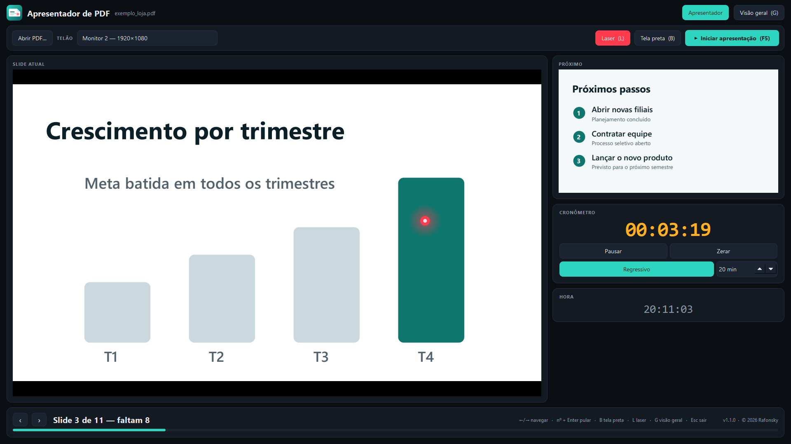
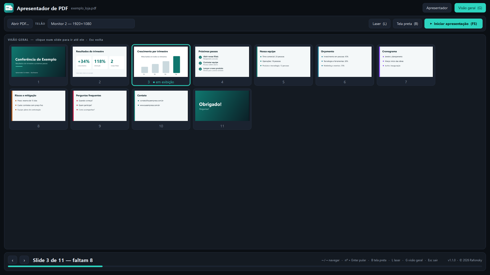
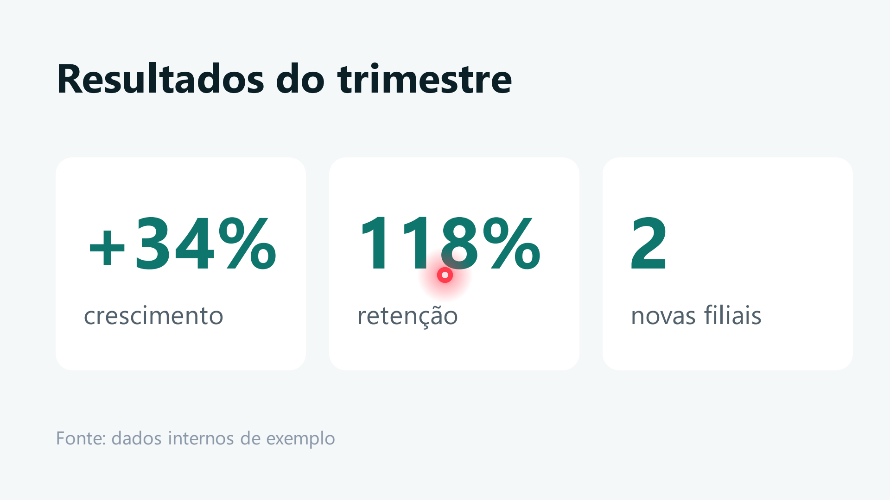

Seu PDF vira apresentação.
Com modo apresentador.
Conecte o projetor, abra o PDF e pronto: o público vê o slide em tela cheia, e você controla tudo pela sua tela, com próximo slide, cronômetro e laser.
- Funciona sem internet
- Sem conta nem cadastro
- Seus PDFs não saem do computador
- Em português, inglês e francês

Tudo o que você precisa no palco
Sem converter nada, sem configurar nada. Cada página do PDF vira um slide.
Modo apresentador
Slide atual grande, próximo slide ao lado, "Slide 5 de 24 — faltam 19" e barra de progresso.
Cronômetro e relógio
Conte o tempo gasto ou o que falta. No regressivo, a cor avisa quando o tempo está acabando.
Laser no telão
Ligue com a tecla L e aponte com o mouse: o ponto vermelho aparece na tela do público.
Visão geral
Veja todos os slides de uma vez e pule direto para qualquer um com um clique.
Passador de slides
Funciona com os passadores comuns: Page Up/Down, F5, Esc, B ou ponto. Sem configurar.
Uma tela ou duas
Com um monitor só, o slide ocupa a tela inteira e o Esc traz o painel de volta. Com dois, o telão vai para o projetor.
Troca instantânea
Os slides vizinhos ficam prontos em segundo plano, mesmo em PDFs grandes.
Tela preta
Aperte B ou ponto e o telão fica preto, para chamar a atenção da plateia. Qualquer navegação volta ao slide, como no PowerPoint.
Pule para qualquer slide
Digite o número e aperte Enter. Ou use a visão geral e clique no slide que quiser.
Abra do seu jeito
Pelo botão "Abrir PDF" ou arrastando o arquivo para a janela do app.
Privado por padrão
Seus PDFs nunca saem do computador. Sem conta, sem anúncios, sem coleta de dados.
Português, inglês e francês
O app abre no idioma do seu Windows. Se o seu não estiver na lista, usa o inglês.
Como funciona
Três passos. Você ensaia em casa e apresenta no evento do mesmo jeito.

1Abra o PDF
Pelo botão ou arrastando o arquivo. A visão geral mostra todos os slides.
2Escolha o telão
Selecione o monitor do projetor ou da TV. O app lembra a escolha na próxima vez. Só tem uma tela? Use a mesma, ou a "janela de teste" para ensaiar.

3Inicie (F5)
O público vê só o slide, em tela cheia e nítido. Use o laser quando precisar. Esc encerra.
Atalhos de teclado
Tudo funciona também com o mouse, mas no palco as teclas (e o passador) são mais rápidas.
Grátis para começar
O app é completo. A diferença está numa marca discreta no canto do telão.
Gratuito
- Todos os recursos
- Sem limite de PDFs ou de uso
- Marca "Feito com Apresentador de PDF" no canto do telão
Sem marca d'água
- Tudo do plano gratuito
- Telão limpo, sem marca
- Cancele quando quiser, pela Microsoft Store
Assinatura mensal dentro do app. O preço pode variar em outros países.
A compra e o cancelamento são feitos pela sua conta Microsoft. O app continua funcionando se você cancelar, apenas com a marca no telão.
Feito para ser simples e privado
Sem cadastro, sem anúncios e sem enviar nada para a internet.
Privacidade
Os arquivos são lidos e exibidos só no seu computador. O app não coleta dados pessoais nem usa analytics. Veja a política de privacidade.
Idiomas
A interface segue o idioma do Windows.
Requisitos
Windows 10 ou 11. Instalação e atualizações pela Microsoft Store, sem instalador separado.
Perguntas frequentes
Não achou o que procurava? Escreva para rafonsky@gmail.com.
Preciso de internet?
Não. O app funciona offline. A internet só é usada pela Microsoft Store para confirmar a assinatura, quando há uma.
Meus PDFs ficam seguros?
Os arquivos são lidos e exibidos só no seu computador. O app não envia nada para servidores. Veja a política de privacidade.
Funciona com passador de slides?
Sim, com os que enviam Page Up/Page Down, F5, Esc, B ou ponto, que são a maioria.
Só tenho um monitor. Funciona?
Funciona. Ao iniciar, o slide ocupa a tela inteira, e o Esc traz o painel de volta. Também há uma "janela de teste" para ensaiar sem ocupar a tela.
O que a marca d'água faz exatamente?
Na versão gratuita, aparece o texto "Feito com Apresentador de PDF" no canto do slide, só no telão. A janela do operador não muda, e todos os recursos continuam disponíveis.
Como removo a marca d'água?
Com a assinatura mensal de R$ 4,95. No app, clique em "Remover marca d'água" (a faixa no topo da janela), conclua a compra na Microsoft Store e volte ao app.
Como cancelo a assinatura?
Pela sua conta Microsoft, em "Serviços e assinaturas". O app continua funcionando, apenas com a marca no telão.
Funciona com PDFs grandes ou protegidos por senha?
Os slides vizinhos são preparados em segundo plano para a troca ser rápida. PDFs protegidos por senha ainda não são abertos: o app avisa que o arquivo é protegido.
Funciona no Mac ou no celular?
Hoje a versão publicada é só para Windows 10 e 11.
Pronto para apresentar?
Baixe grátis na Microsoft Store e abra o seu primeiro PDF em menos de um minuto.